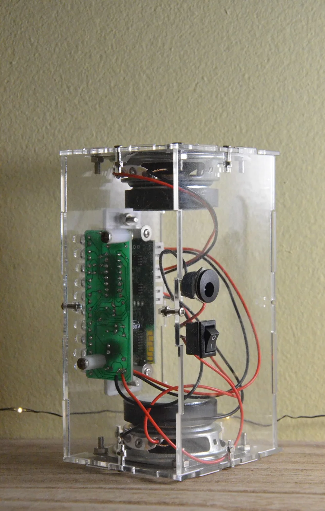

Personal project · Electronics & assembly
Bluetooth speaker.
Building a DIY Bluetooth speaker kit to learn component identification, soldering, wiring, and enclosure assembly.
- My work
- Kit assembly & testing
- Build
- Bluetooth speaker with LED display
- Focus
- Electronics & soldering
The goal
I chose a DIY Bluetooth speaker kit to get more comfortable with circuitry and assembling electronic hardware. The kit supplied the circuit design, parts, and instructions. My work focused on identifying the components, soldering and connecting them, assembling the enclosure, and testing the build.
What was inside the kit
| Part or feature | Kit configuration |
|---|---|
| Speakers | Two 4 Ω, 3 W speaker drivers |
| Control board | Bluetooth audio controller with onboard controls |
| Display board | RGB LED spectrum display |
| Circuit components | Resistors, capacitors, LEDs, transistor, IC, and microphone |
| Enclosure | Six transparent acrylic panels with screws, nuts, and standoffs |
| Power range | 3.7–5 V DC, as specified by the kit instructions |
These are the supplied kit specifications, not measured audio-performance results.

Soldering and assembly
The number of small parts was initially overwhelming. I worked through the instructions gradually, paying attention to component identity, placement, and orientation. Soldering the board made the relationship between the parts much easier to understand.
The remaining work brought the circuit board, speaker drivers, control module, and wiring together inside the acrylic enclosure. That meant following both the electrical connections and the physical assembly sequence.
The completed build
I completed the kit and tested the assembled speaker. The clear enclosure leaves the circuit boards, mounting hardware, and wiring visible, showing how the electronics and mechanical assembly fit together.



What I learned
This project gave me practical experience with component identification, soldering, and careful assembly. Following the connections through the finished speaker helped turn an unfamiliar collection of parts into an understandable working system.